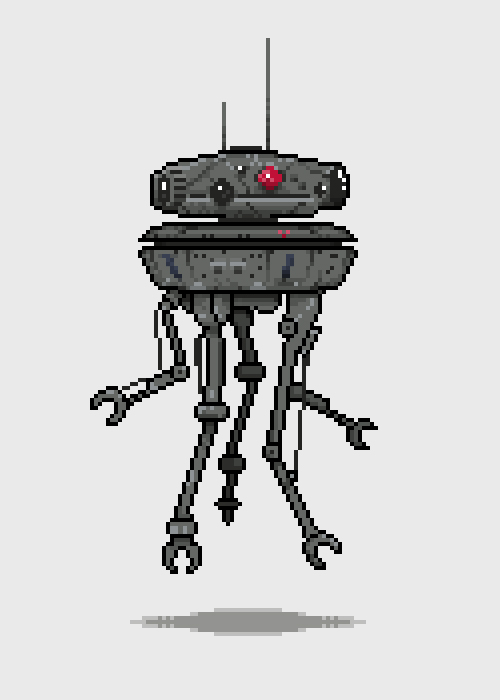

Sistemas de hardware.
¿Que son los sistemas de hardware?
Los tipos de hardware que incluye un sistema informático básico son el monitor,
tarjeta madre, unidad de alimentación, teclado y mouse,
entre otros.
Se conoce como hardware a todos los componentes electrónicos o electromecánicos
a partir de los cuales se construye una computadora.
a continuacion muestro un video donde explico los diferentes tipos de hardware y que es un hardware.
